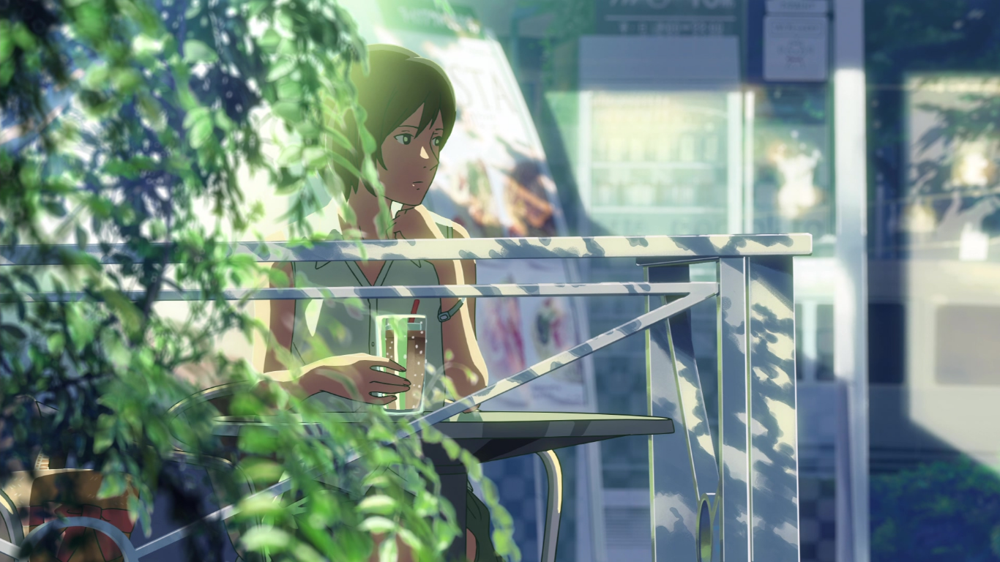

The Garden of Words
言の葉の庭
The Garden of words merupakan
sebuah animasi 2D yang dibesut oleh studio KomikWave.
Movie ini berdurasi 45 menit dan rilis pada tahun 2013
lalu. Movie ini bercerita mengenai seorang pelajar
yang ditinggal orang tua nya bercerai dan tinggal bersama
ayahnya. Hidup yang sederhan serta membantu ayahnya yang
seorang pengerajin sepatu membuat ia terampil pada
seni memahat kayu tersebut.
Ditengah kehidupannya ia sering menyempatkan waktu
mengunjungi taman dengan gubuk kecil untuk membuat sepatu
Tidak jarang ia membolos sekolah dengan alasan hujan hanya
untuk membuat sepatu di sana
Seperti karya makoto shinkai lainnya, takdir
menjadi aspek penting dalam pembawaan cerita.
Ketika ia tengah memahat sepatu, dalam penantian meredanya
rintik,a menunggu dengan seorang wanita yang cukupd
dikenalinaya. Wanita ini adalah gurunya sendiri.
dari balik dinginnya hujan dan serutan kayu,
kisah romansa terikat umur dari guru dan murid
ini disajikan dengan begitu rapih dan proporsif.
"Jika hijan tidak kunjung mereda
Masih sanggupkah kau menunggu"
"Bahkan jika hijan tidak pernah turun
Aku akan tetap menunggumu"
Dialog diatas merupakan kutipan yang saya ambil
dari movie ini. movie ini juga mengangkat
point sastra lama jepang yang dalam dan
penuh makna.
Pada akhirnya penulis merekomendasikan
movie ini sebagai pilihan yang tepat
bagi penikmat roman yang anti mainstream,
grafik menawan, serta disajikan dalam durasi
singkat. Semoga bermanfaat.
Terimakasih.
Kirim masukan anda